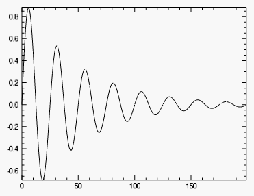
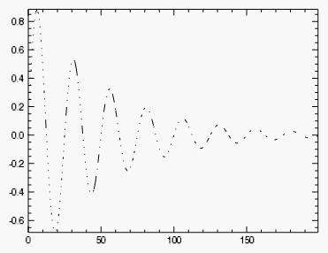
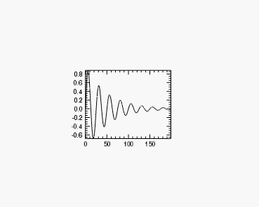
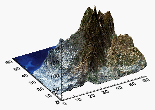
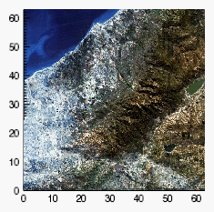
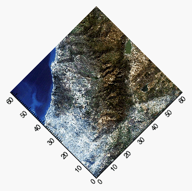
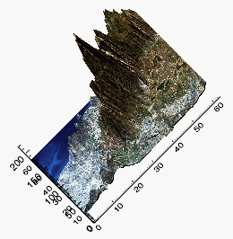
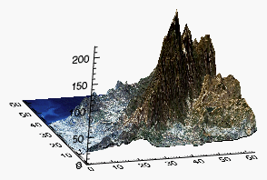

You can use the same basic process to create and modify any of the IDL graphics. In this topic, we will demonstrate how to use the IDL graphic functions to create graphics and subsequently manipulate them.
To create an IDL graphic, call one of the IDL graphic functions with appropriate data. In this example, we will use the PLOT function:
; Define the data.
data = SIN(2.0*FINDGEN(200)*!PI/25.0)*EXP(-0.02*FINDGEN(200))
; Draw the plot.
p = PLOT(data)

Notice that the PLOT function returns a reference to the created graphic:
p = PLOT(data)
The reference p is our hook to the graphic, and we will use it to modify or retrieve information from the graphic.
Each IDL graphic has a set of associated properties. You can change the values of these properties to change the appearance of the graphic.
For example, the PLOT graphic has a LINESTYLE property that determines the kind of line that is drawn. After creating the graphic, you can change its LINESTYLE property using the following syntax:
graphic.property = value
To create a PLOT graphic and change the LINESTYLE property, the code would be:
data = SIN(2.0*FINDGEN(200)*!PI/25.0)*EXP(-0.02*FINDGEN(200))
p = PLOT(data)
p.LINESTYLE = 1
Notice that changing a graphic property immediately changes the graphic's appearance:

Some properties can be set (initialized) at graphic creation, and are identified by the (Init) tag in the Help system. For example, at graphic creation you can set the graphic's location within the window. In this example, we will initialize the graphic to occupy the middle third of the window:
data = SIN(2.0*FINDGEN(200)*!PI/25.0)*EXP(-0.02*FINDGEN(200))
pos = [0.33, 0.33, 0.66, 0.66]
p = PLOT(data, POSITION=pos)

The majority of property values can also be retrieved. For example, you can retrieve the value of a plot's LINESTYLE property and use it to set the LINESTYLE property of another graphic:
p = PLOT(data, LINESTYLE = 3)
style = p.LINESTYLE
p1 = PLOT(data1, LINESTYLE = style)
To get a list of a graphic's properties, you can reference the graphic function in the Help system, or you can print the list directly by printing the graphic reference:
PRINT, p
The output is:
PLOT <72245>
ANTIALIAS = 1
ASPECT_RATIO = 0.00000000
ASPECT_Z = 0.00000000
.
.
.
The first line of output lists the graphic type and ID, and the following lines list all of the graphic's properties and current values.
Properties can be thought of as settings that change the appearance of a graphic. You can also manipulate graphics using methods, which are small programs that carry out discrete tasks. Each IDL graphic has a set of associated methods that are listed on the graphic's Help page.
For example, you can rotate a graphic around its axes by calling the graphic's Rotate method. Let's first create a test SURFACE graphic:
s = SURFACE( /TEST)

Next, we call the SURFACE graphic's Rotate method with the /RESET keyword to reset the rotation on all the axes:
s.Rotate, /RESET

Now we call the Rotate method individually for each axis, to recreate (roughly) the original image:
s.Rotate, 45, /ZAXIS

s.Rotate, -60, /XAXIS

s.Rotate, 45, /YAXIS

Once you have created a graphic to your satisfaction, you can use built-in methods to save or print the graphic.
For the previous surface graphic we created:
s = SURFACE( /TEST)
You can save the graphic with the Save method:
s.Save, 'surface.png'
The method will determine the image file type from the filename extension. See Save Method for more information.
The Print method prints the window contents of an IDL graphic to the default printer:
s.Print, /LANDSCAPE
See Print Method for more information.
| • | Graphics |
| • | Change Graphics Properties |
| • | Formatting IDL Graphics Symbols and Lines |
| • | Saving Graphics |
| • | Rotate Method |
| • | Graphics Annotations |
| • | Legends |
| • | Text and Symbols |
| • | Mathematical Symbols and Greek Letters |